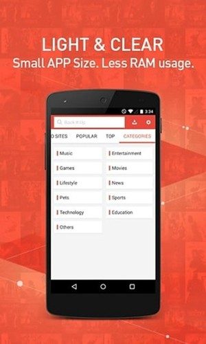

我装 Snaptube 这一周：刷到想存的视频终于不用再到处找链接
朋友推了好几次的多平台视频下载工具，装完用了一周，说说第一手体验——广告确实有，但下载管理和批量玩法比我想象中顺手，改包的坑踩过才知道正版有多重要。
说实话我装这个应用纯粹是被逼的。
上周刷短视频刷到一个讲老北京美食的合集，一共二十多条，每条都有三五分钟，想存下来周末慢慢看。结果挨个点分享要么跳公众号要么跳付费会员，折腾半小时只存下来两条。朋友在旁边看我折腾，说了句「你装 Snaptube 啊」——我之前对这个名字的印象还停留在几年前听过但没正经用过，正好这次下定决心装一个。
第一眼：装完黄色图标就在那了
安装的过程倒是没想象中复杂，就是安卓那个「未知来源」权限绕了一下。我是用夸克下的 APK，点开时系统弹了个「禁止安装来自此来源的应用」的提示，一开始以为包有问题，后来才反应过来是没给夸克开权限。进设置里找了一圈，给夸克勾上「允许安装未知应用」，返回再点安装就顺了。进度条走完，桌面多了个明黄色的小图标，点开也没要注册什么账号，直接就进主页了。

装完顺手做了两件事：把刚才开的那个未知来源权限给夸克关回去了（毕竟权限开着总归不太踏实，下次装别的再开就是了），然后去电池设置里把它加进了后台不受限制名单——之前装过别的下载工具，锁屏之后就停了，这个提前排上省得后面踩坑。
用了一周，最常碰的三个功能
下载管理页是真的省心
我之前用过几个下载工具，下载完就完事了，中间想暂停或者继续还得重新点链接。Snaptube 的管理页是把所有任务都列出来了——正在跑的、排队的、失败的、已经完成的，一页看全。那天我同时下了三个视频，中间想切出去刷会儿别的，回来的时候想暂停其中一个，直接点那条的暂停按钮，另外两个继续跑，互不干扰。网断了再连回来，暂停的任务点继续就能接着传，不用从头来。

管理页管的是「过程」，已经下完的文件在应用内另一个「我的文件」区，点进去能直接播放、分享或者删掉。这种分工挺清楚的，不会在一堆文件里找哪个还在跑。
批量下载比挨个点爽太多
那二十多条美食合集，我试着用了它的批量玩法——直接把播放链接粘进去，它自动解析出整个列表，我勾选想要的几条就入队了。批量的好处不光是省时间，管理页里批量入队的任务是排队逐个跑的，个别失败了单独重试那几条就行，不用整批重来。那天网有点抖，中间有三条卡住了，我点了重试就过了，其他的没受影响。更细的批量参数我后来去Snaptube文档翻了一下，还有按播放列表一键入队和自定义下载路径的玩法。
广告确实有，但没我想的那么烦
这个得老实说——免费应用的商业模式就是免费功能加广告，官方也不避讳这一点。广告主要出现在浏览和下载环节，下载过程中本身不会插在视频里。我用下来的感觉是，如果目标明确（比如就是要存那二十条合集），直接走固定入口，闲逛少一点，碰到广告的概率就低。反而如果漫无目的地刷它的内置浏览器，广告就会多一些。
值不值得接受这个代价？对我来说值得，毕竟功能全、不限次数、全平台都能用。但如果有人就是零广告零打扰要求，那别碰这个，也别信网上那些「去广告版」——这个我特意查了，官方明确说不存在付费版、Pro 版、VIP 版，凡是宣传这些的都是改包，别碰。
别碰改包，这是我给所有人的忠告
提到改包就得多说两句。装之前我也搜过这个名字，结果里混着不少「高级版」「解锁版」「无广告版」，还挂着各种花哨的域名。后来去Snaptube官网核对了一下，官方口径很明确：全部功能免费，没有任何付费版本。那些宣传「去广告」的安装包，本质上就是被第三方改过的——正版包有开发者签名，改过的包内容不可控，轻则夹带多余广告，重则索要通讯录、短信、位置这些根本不需要的权限。
怎么判断是不是改包？几个实用信号：宣传里出现「去广告」「会员免费」「解锁 VIP」的直接 pass；文件体积跟正版差距大的（正版三十多 MB）高度可疑；安装时索要无关权限的直接取消。稳妥的拿包路径就是去Snaptube下载，或者选有厂商商店上架的版本。正版本身有广告，但那是可控的烦人；改包给你的省心是假的，风险是真的。
适合谁？不适合谁？
用了一周下来，我觉得这个应用的定位挺明确的。
适合的人：经常刷多平台内容、想存下来离线看的人（学生党存课、上班族存讲座、像我这种存合集慢慢看的）；不想搞一堆工具、一个应用搞定的人；能接受有广告但不想花冤枉钱买会员的人。
不太适合的人：对广告零容忍的（真的会很不爽）；极致隐私要求的（毕竟应用要存储权限才能写文件）；只需要偶尔下一次、不想装任何额外应用的。
还有一点想说的：下载完的文件别随便放，应用内的文件区能直接播放和分享，但真想长期存的话还是建议挪到自己的备份里。应用升级或者换手机的时候，文件区里的东西不一定跟你走。
一周快到了，还在用
目前的状态是：那二十多条美食合集已经存完了，周末准备慢慢看。中间还帮朋友下了几个他追的课程视频，批量下载帮了大忙。广告确实在那，但我目标明确用得多了也习惯了——毕竟换来的是不用挨个找下载链接、不用挨个平台开会员。
如果让我给一句总结：能接受广告就用正版，能存下来想存的东西就值了，别碰改包，别信什么解锁版。顺手说下，中文资料做了三处备份——GitHub 是主维护阵地，Gitee 和 GitCode 各有一份镜像，免得哪天某个平台抽风找不着。